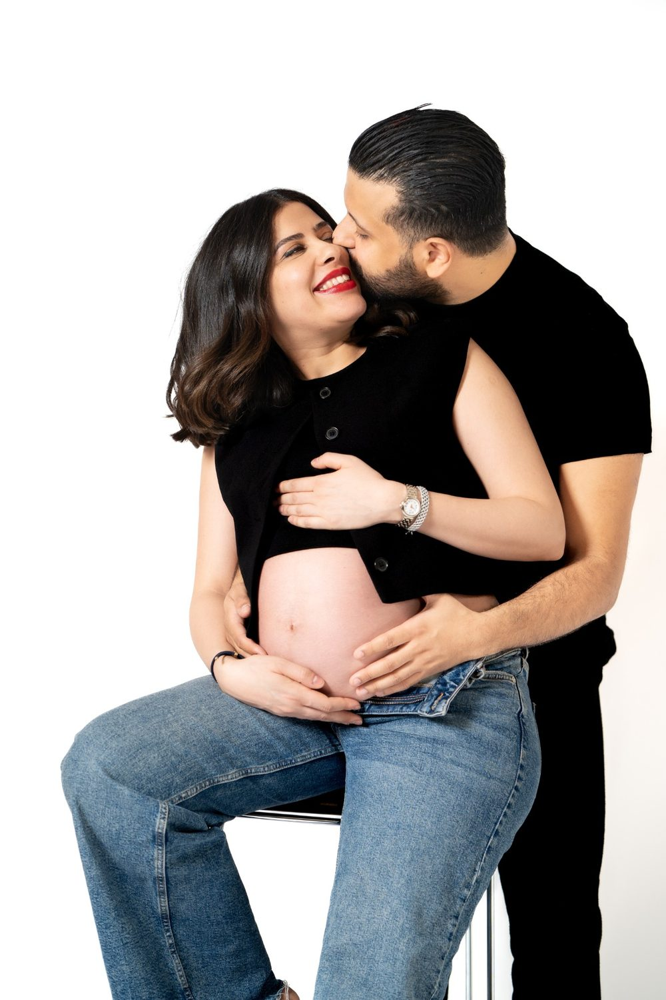
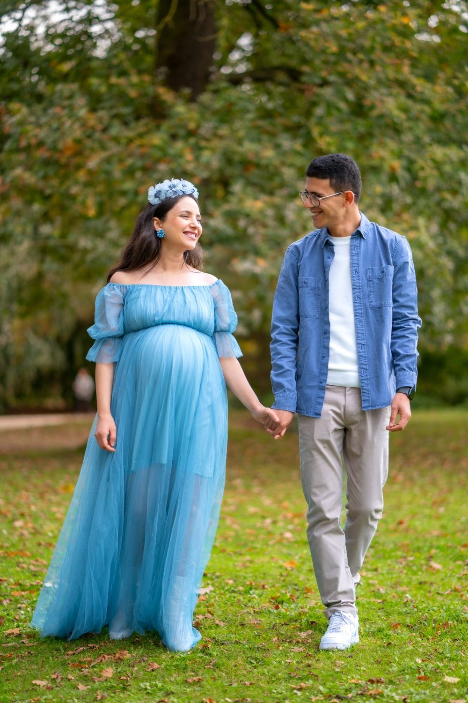
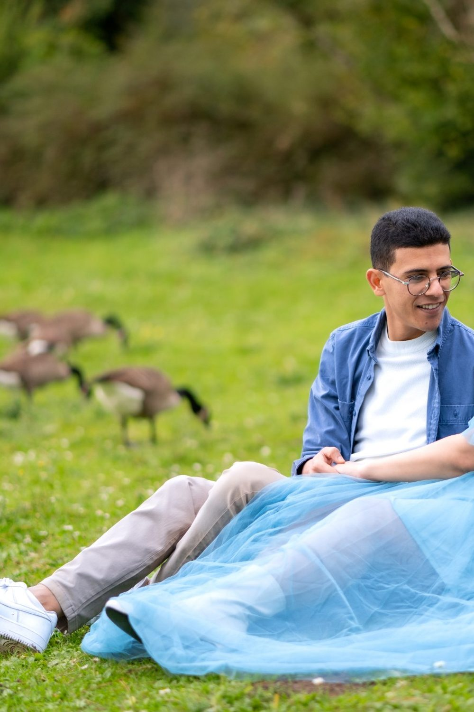
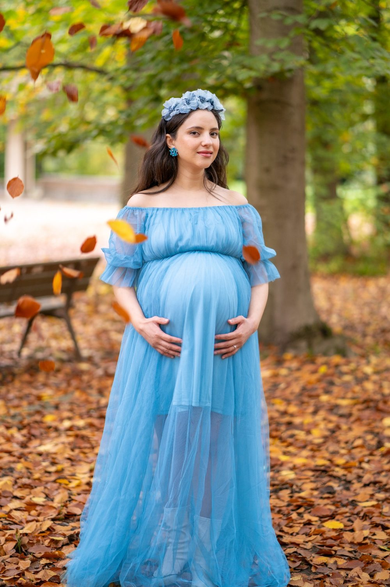
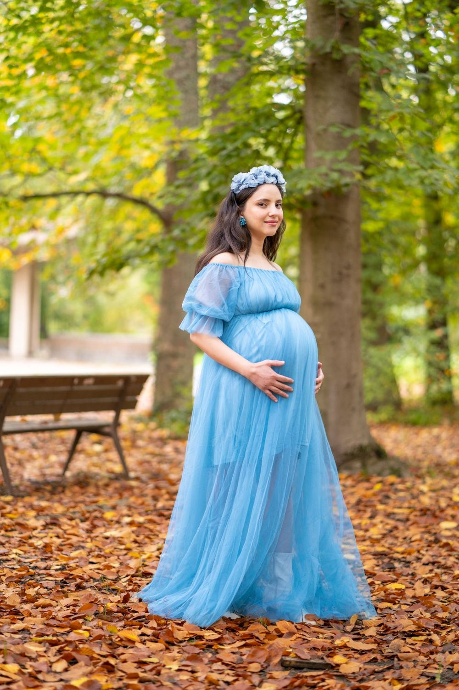

Séance photo grossesse à Maisons-Laffitte
Une séance grossesse garde ce temps d'attente, le ventre arrondi, les mains qui se posent dessus, les mots que vous murmurez au bébé. Une séance à Maisons-Laffitte, c'est aussi la possibilité de varier les ambiances entre Parc de Maisons-Laffitte et Bords de Seine.

Où faire votre shooting
Pour un shooting grossesse à Maisons-Laffitte, le Parc de Maisons-Laffitte offre des allées planes et l'ombre de grands arbres, propices à une séance calme. Vous marchez à votre rythme, robe longue, une main posée sur votre bébé. Les Bords de Seine permettent ensuite des silhouettes de profil face à l'eau, assise au bout d'un ponton. Quelques secondes filmées suffisent à garder le mouvement du tissu et les mots chuchotés, à rejouer plus tard pour votre enfant.
Nos lieux pour cette séance
Parc de Maisons-Laffitte
Grands arbres et allées. Un décor de nature calme pour poser sans fatigue, avec des bancs et de l'ombre.
Bords de Seine
Promenade et pontons. Une berge ou un plan d'eau pour des portraits lumineux et apaisants.
Hippodrome
Pistes et tribunes en bois. Des rues et des façades pour une séance plus urbaine et décontractée.
Château de Maisons
Façade classique de François Mansart.
Pour que tout se passe bien
Chic, boisé, avec de grandes pelouses. Le parc est ombragé et très lumineux en milieu d'après-midi.
La séance se fait idéalement entre la 28e et la 35e semaine, quand le ventre est bien visible et que vous êtes encore à l'aise. Elle dure environ une heure, à votre rythme, avec des pauses.
Arrivez en milieu d'après-midi, quand le parc devient très lumineux sans être écrasant. Les allées sont planes, idéales en fin de grossesse ; prévoyez simplement des chaussures confortables pour marcher jusqu'à la Seine et une petite bouteille d'eau.
À Maisons-Laffitte, vous êtes à RER A Maisons-Laffitte : nous préparons l'itinéraire entre les lieux avec vous.




Avant de nous écrire
Où faire un shooting grossesse à Maisons-Laffitte ?
Pour un shooting grossesse à Maisons-Laffitte, le Parc de Maisons-Laffitte est notre premier choix : allées boisées, calmes, abritées du soleil direct. Les Bords de Seine complètent la séance avec quelques images près de l'eau, sans longue marche.
Quel mois de grossesse choisir pour une séance photo en extérieur à Maisons-Laffitte ?
Pour une séance grossesse en extérieur à Maisons-Laffitte, beaucoup de futures mamans choisissent la fin du deuxième trimestre ou le début du troisième. Dans le parc, les bancs et l'ombre des arbres permettent de faire des pauses aussi souvent que nécessaire.
Comment venir à Maisons-Laffitte ?
RER A Maisons-Laffitte. Nous nous déplaçons avec notre matériel photo et vidéo.
Peut-on venir avec les enfants ?
Oui, les portraits avec les aînés sont souvent les plus touchants, nous prévoyons un moment dédié.
Parlons de votre mariage
Demander un devisGrossesse ailleurs en Île-de-France
© Le Couple Photographe · Photographe de mariage Paris & Île-de-France · Mis à jour le 10 octobre 2026
Demander un devis